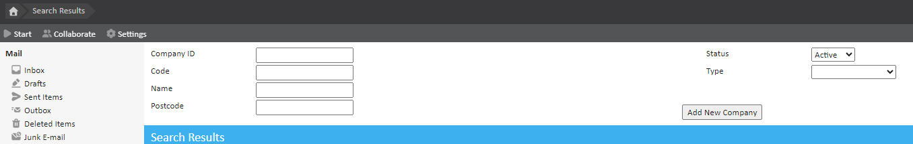
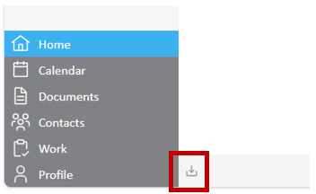

This article will explain the steps taken to find a company within your chamber and, if needed, export a list of companies as a csv file.
Companies can be found on your chamber using the 'Find Company' tool. Start Page > Company > Find Company.
Similarly to searching for patients, clinicians and members of staff, this page contains a number of fields that can be used to search for a company.

You may also add a new company from this page if you do not find the company you are looking for. To do this click the ‘Add New Company’ button, found underneath the 'Type' search field.
A list of companies may be exported by clicking the export to csv button, found at the bottom left of the page.
